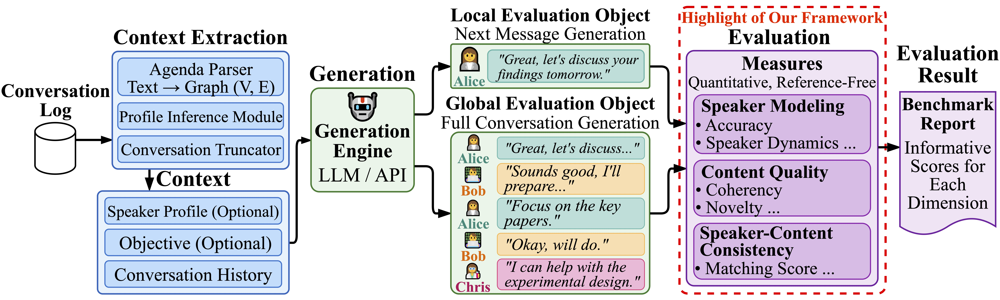
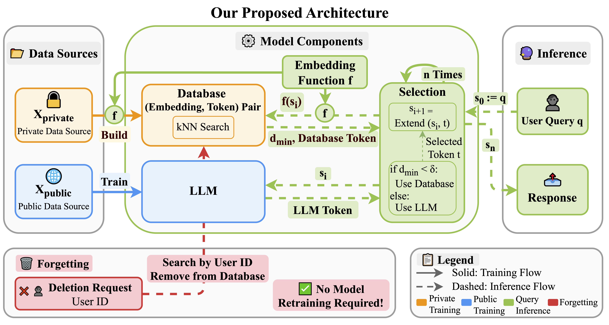
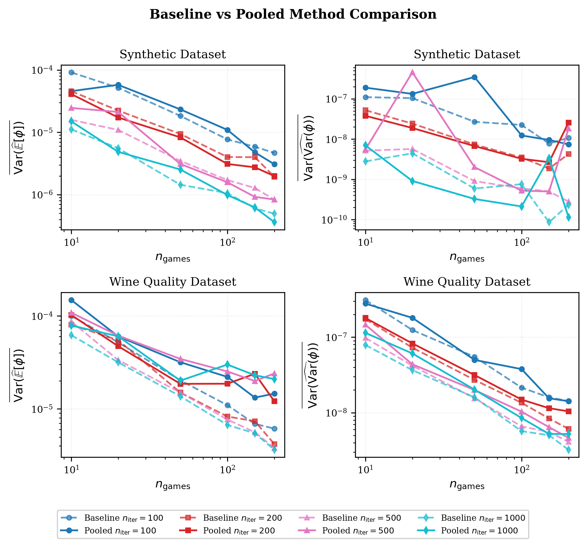
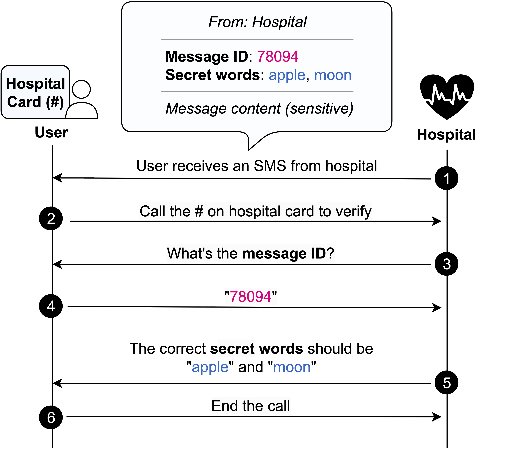
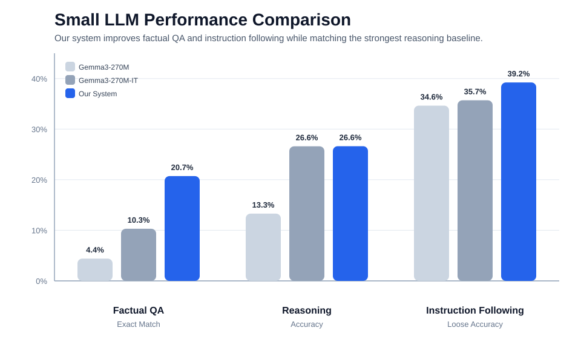
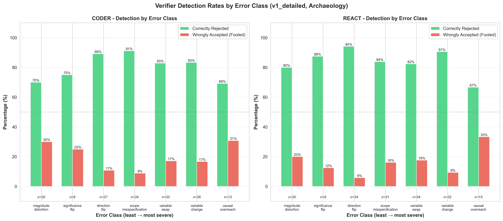
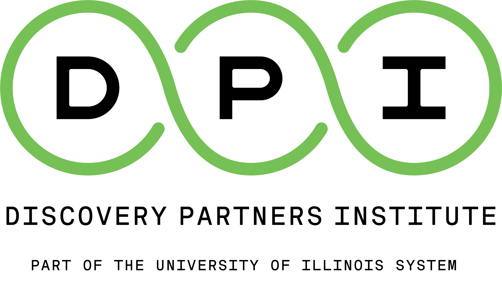

My research centers on developing a principled understanding of large language models and data-driven machine learning, with the goal of making these models more reliable, trustworthy, and useful in real-world settings.
📌 Seeking research internship opportunities for Summer 2026.
I am particularly interested in how data shapes model behavior during training and inference, including evaluation and benchmarking for complex conversational settings, privacy and unlearning in language models, and uncertainty-aware methods for data valuation and model assessment.

MPCEval: A Benchmark for Multi-Party Conversation Generation
Minxing Zhang, Yi Yang, Zhuofan Jia, Xuan Yang, Jian Pei, Yuchen Zang, Xingwang Deng, Xianglong Chen
Under Review (KDD), 2026
arXiv
A task-aware benchmark for multi-party conversation generation that evaluates both next-turn prediction and full-conversation quality with reproducible, reference-free metrics for speaker behavior, content quality, and their consistency.

Scalable Private Information Management in Large Language Models
Minxing Zhang, Zhuofan Jia, Aritra Guha, Yaron Kanza, Jian Pei, Divesh Srivastava
Under Review (VLDB), 2026
A kNN-LM-based framework that separates public model training from private-data storage, enabling accurate inference and efficient user-level deletion without model retraining.

Shapley Value on Uncertain Data Zhuofan Jia, Jian Pei
Under Review (TKDE), 2026
arXiv
A probabilistic data-Shapley framework that models each participant's value as a random variable induced by sampling, and estimates both its expectation and variance with unbiased and variance-efficient Monte Carlo methods.

VeriSMS: A Message Verification System for Inclusive Patient Outreach against Phishing Attacks
Chenkai Wang, Zhuofan Jia, Hadjer Benkraouda, Cody Zevnik, Nicholas Heuermann, Roopa Foulger, Jonathan A. Handler, Gang Wang
Proceedings of ACM CHI Conference on Human Factors in Computing Systems (CHI), 2024 paper
An inclusive patient-outreach verification system that lets users confirm healthcare messages through SMS and phone calls, improving phishing detection without requiring smartphones or extra setup.
Selected Projects

Fine-Tuning and Evaluation of Small LLMs Large Language Models
A fine-tuned modular Gemma-3-270M system that combines task routing, supervised fine-tuning, knowledge distillation, and retrieval augmentation to improve factual QA, reasoning, and instruction following.

Beyond Binary Truth: Benchmarking the Rigor of LLM Agents in Scientific Hypothesis Verification Large Language Model Agents
A benchmark for false-hypothesis rejection that uses controlled claim perturbations to evaluate whether tool-using scientific agents can rigorously reject invalid hypotheses through executable, data-grounded analysis.
Professional Experience
Software Engineer Intern
HERE Technologies · Dynamic Content Team
Chicago, IL · Jan 2023 - May 2023
Built machine learning solutions for location intelligence, including store-status prediction models with F1 above 95% and privacy-preserving geospatial data processing for customer trip data.

Machine Learning Engineer Intern
Discovery Partners Institute · Create Wisdom Team
Chicago, IL · Jan 2022 - May 2023
Developed an ML-powered medical search platform that combined clinical data, content understanding, and semantic retrieval to improve access to relevant healthcare information.
Academic Service
Reviewer, ACM Transactions on Knowledge Discovery from Data (TKDD), 2025
Graduate School Fellowship, Duke University, 2023 - 2024
University Honor (The Bronze Tablet), University of Illinois Urbana-Champaign, 2023
C.W. Gear Outstanding Undergraduate Award, University of Illinois Urbana-Champaign, 2022
Dean's List, University of Illinois Urbana-Champaign, 2019 - 2023
James Scholar, University of Illinois Urbana-Champaign, 2019 - 2023